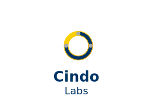

Almanack Indonesia 2025
Prediksi, tren, dan insight mendalam untuk masa depan Indonesia — oleh @cindoeth
Download PDF
Download Word
Browser Anda tidak mendukung PDF. <a href="almanack-indonesia.pdf">Klik di sini untuk download</a>.